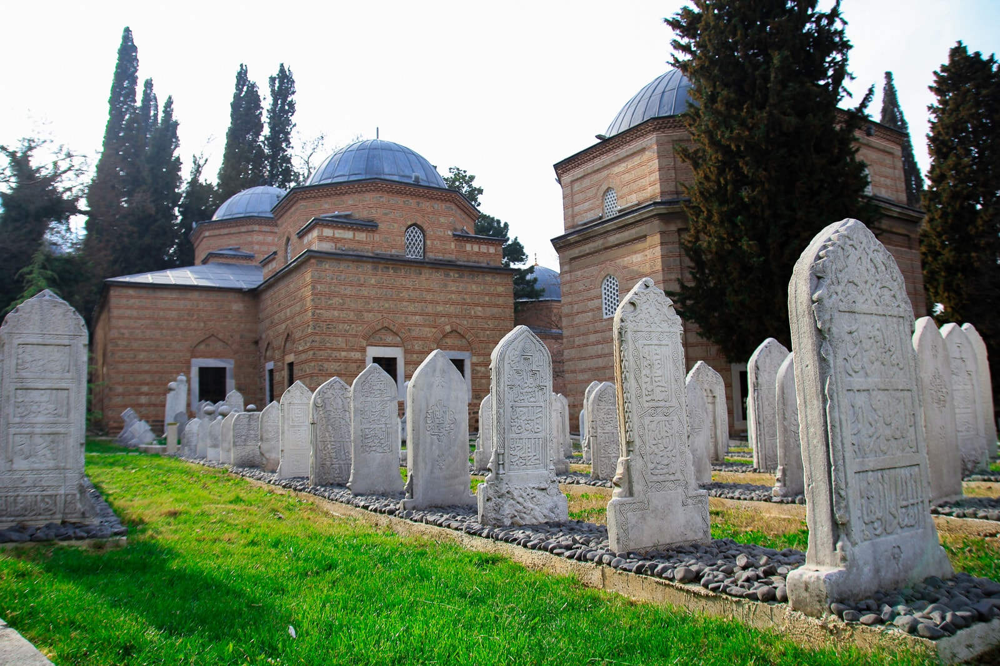
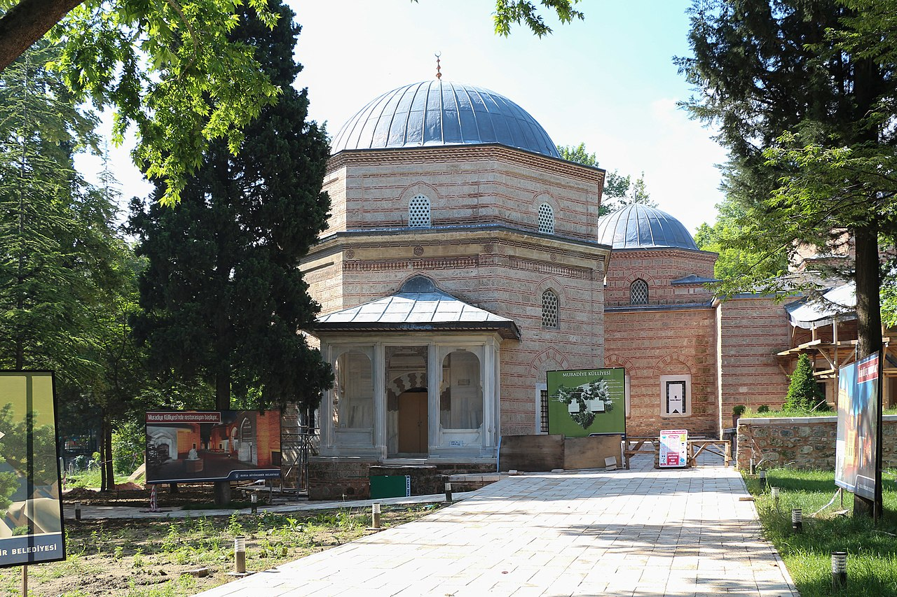

Muradiye Külliyesi, Sultan II. Murad'ın Bursa'da 1425-1426 yıllarında yaptırdığı külliye. Bulunduğu semte de ismini verir. Şehrin etrafa doğru yayılmasını ve açılımını sağlamak amacıyla yaptırılan külliye, Muradiye Camii, hamam, medrese, imaret ve sonraki yıllarda yaptırılmış 12 türbeden oluşur. Sonraki yıllarda çok sayıda hanedan mensubunun gömülmesiyle saraya ait bir kabristan görünümü kazanmış ve İstanbul’dan sonra en çok saraylıyı barındıran ikinci hazire haline gelmiştir. Bursa'nın çeşitli istimlaklerle kaldırılan mezar taşları ve türbelerinin kitabeleri de caminin haziresine getirilmiştir. Külliye, 2014 yılında “Bursa ve Cumalıkızık: Osmanlı İmparatorluğunun Doğuşu” Dünya Miras Alanı 'nın bileşenlerinden birisi olarak UNESCO Dünya Mirası Listesi'ne girmiştir.
Külliyenin ana binası Muradiye Camisi'dir. Zaviyeli camiler formundadır. İki minarelidir. Girişte, tavanda yer alan yirmi dört kollu yıldızlardan gelişen geometrik süslemeli muhteşem ahşap göbek 1855’ten sonra yapılan onarım esnasında monte edilmiştir. Ahşap müezzin mahfili ile Rokoko üslubundaki alçıdan mihrabı ve minarelerinden batıda olanı da 1855 depreminden sonra yapılmıştır.[3] 16 hücreli medrese yapısı caminin batısındadır. Tipik bir erken dönem medresesi olan yapı 1951’de restore edilmiş ve uzun zaman Verem Savaş Dispanseri olarak kullanılmıştır. Günümüz de Kur'an ve El Yazmaları Eserleri Müzesi olarak kullanılır. Caminin 20 m. kadar kuzeydoğusunda bulunan imaret moloz taştan inşa edilip alaturka kiremitle kaplanmıştır. Günümüzde lokanta olarak hizmet verir. Çok basit ve sade bir yapı olan hamam, soğukluk, ılıklık, iki halvet ve külhan bölümlerinden oluşur. 1523, 1634 ve 1742 yıllarında onarılan ve uzun yıllar depo olarak kullanılan yapı; günümüzde Engelli Merkezi’dir.
1855 Bursa Depreminde cami hafifçe zedelenmiş, minaresi yarılmış, türbe kubbesi ayrılmış, medresenin dershane ve duvarları zarar gördüğü için külliye büyük bir onarım geçirmiştir. 2012 yılında başlatılan üç aşamalı restorasyonda ise ilk aşamada 12 türbe dış kubbelerinin kurşun kaplama yenileme çalışması, ikinci aşamada külliye için röleve, restitüsyon ve restorasyon çalışması yapılmış; üçüncü aşamada Fresk üstü alçıların kazınarak alttaki zamana ait Fresk ve hattat yazıların sanat eserleri özgün ve orijinal haliyle tek tek ortaya çıkarılması başlatılmıştır. Külliye, 2015 yılında restorasyon sona erdiğinde Külliye ziyarete açılmıştır.
Kaynak: Bursa İl Kültür ve Turizm Müdürlüğü